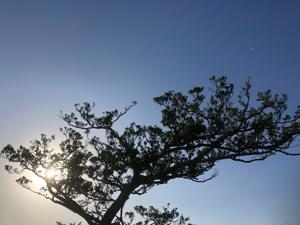
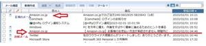
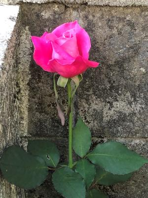
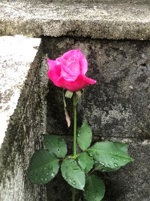
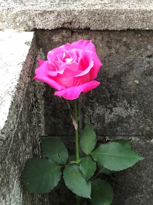
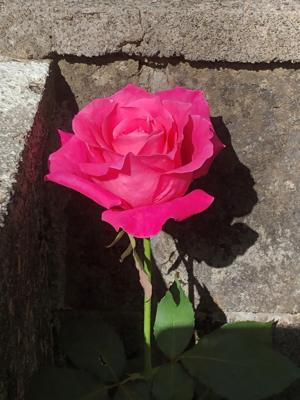
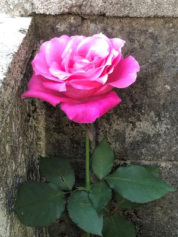

うるがいの話 ある日
最新: Amazon詐欺メール【うるがいの話 ある日】とは 一日だけのプログです
『うるがいの話』の最新一日だけのプログで、通信料が少なく経済的だ。カニの画像をクリックすると全ての日付が載る『うるがいの話』サイトを表示します
|
|
【うるがいの話】 うるがい(ｳﾙｶﾞｲ urugai)とは、『もずくがに』の名前でとても大きくなります。 |
|---|---|
|
|
【カミマヤーの話】 猫のことを方言でマヤーといいます。カミマヤー（kamimayaa）とは、神の猫のことです。 |
|
【たながぁの音楽】 たながぁ（ﾀﾅｶﾞｰ tanagaa）とは手長えびのことで、何種類かあり大きいのは車 エビぐらいになります。 |

|
【ぶながぁの話】 ぶながぁ(ﾌﾞﾅｶﾞｰ bunagaa)とは、赤い髪の毛、赤い身体、そして身長は１ｍ２０ｃｍ ぐらい、川の蟹を食べているの目撃された。場所は沖縄県国頭郡大宜味村のと ある村僕の隣近所に住んでいる爺さんから、聞いた話です。 |
|
|
【ギーマの話】 ギーマ(giima)とは、山原の里山に咲くスズランに似た、 花を付けます。実は食べられます、 気が付くと口の周りが紫になっています。 |
2023年02月01日 (水）Amazon詐欺メール
15:58
 
Ａｍａｚｏｎ詐欺メールのメールにあったリンク先をクリックした、レスポン
スが遅いので怪しいと中断する。この前のＮＴＴ詐欺ＳＭＳに続き２度目であ
る。その筋の人だと思っていたが・・・、恥ずかしい。
ネットで調べたら、既に頻発しているらしい、「Ａｍａｚｏｎプライム会費の
お支払い方法に問題があります」の詐欺が急増してるらしい、対策の項目を確
認してみると
2-1-2.メールの送信元を確認する
詐欺 Amazon.co.jp
返信先 no-reply@amazon.co.jp
@Amazon.co.jpのamazonが大文字のＡ、
ご丁寧に返信先は正しい@amazon.co.jpを設定している
正規 Amazon.cp.jp
2-1-3.リンクのアドレスを確認する(パソコンで確認）
詐欺 www2.amazaon.co.jp.yfyaigw.cn → amazaon 何だ！
正規 www.amazon.co.jp
2-1-5.宛名を確認する
詐欺 urugai@nifty.com お客様 ← メールアドレスを設定している
正規 うるがい様 ← 正しい名前が出てくる
2-3.「メッセージセンター」から迷惑メールを見分ける方法
受信トレイにおいてAmazonで送受信したメールを確認できる！
詐欺メールの
「お支払方法に問題があり、プライム特典をご利用いただけない状況です。」
は無かった。この方が一番確実かな。
詐欺メールに騙され、リンク先をクリックしたが、応答が遅かったのはセキュ
リテイ対策で利用しているマカフィーのおかげかも。
 
 
気持ちを明るくするため門の片隅に咲いていた日々変化する薔薇の花を、沢山
載せることにした。見比べると和むかも。

１５時４８分 ビットコインの総資産 ￥８、７２４（↑１１７）